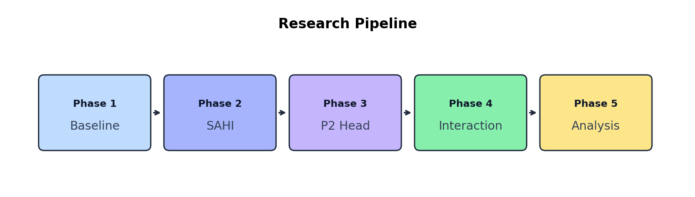
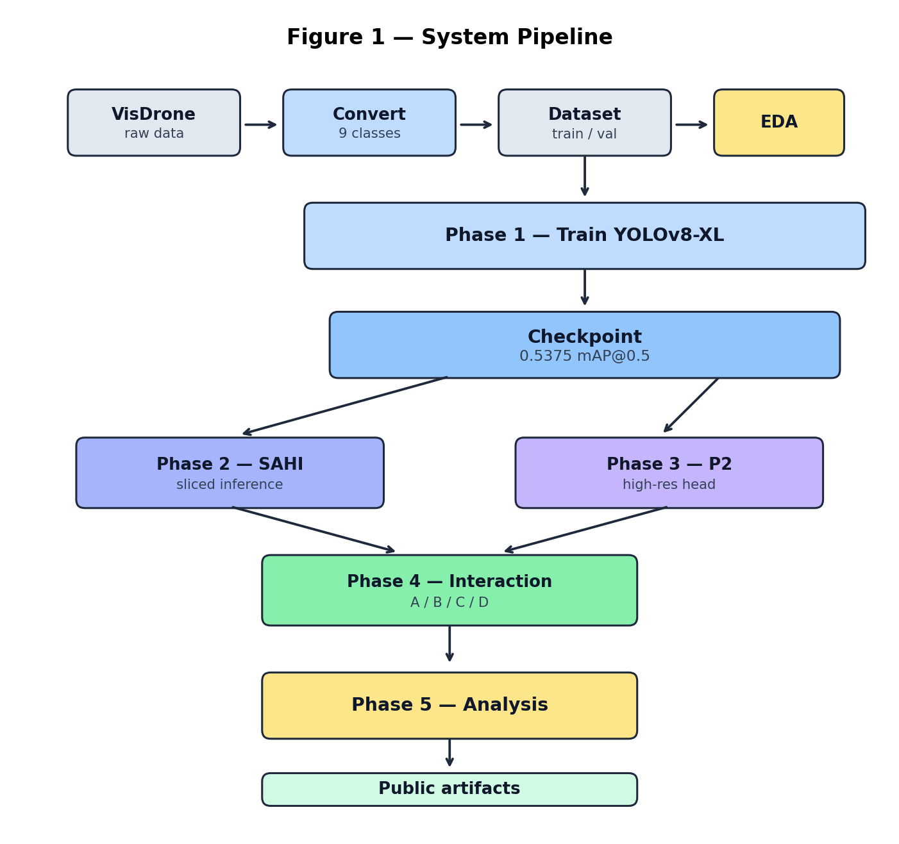
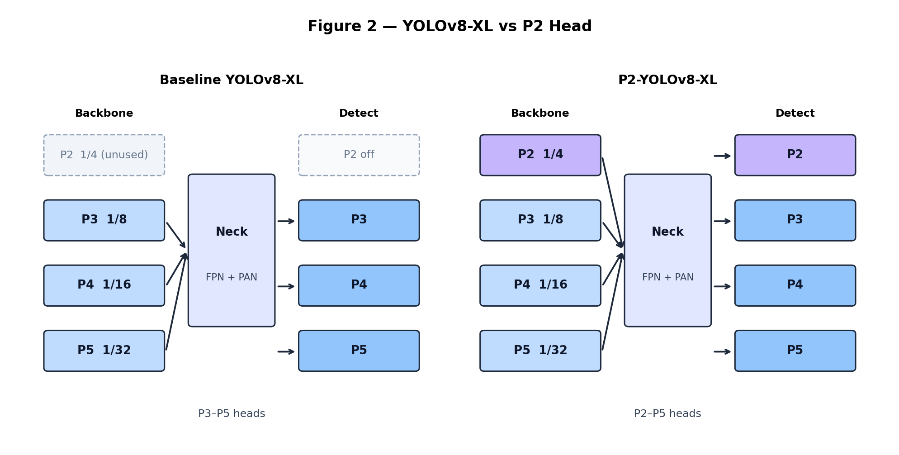
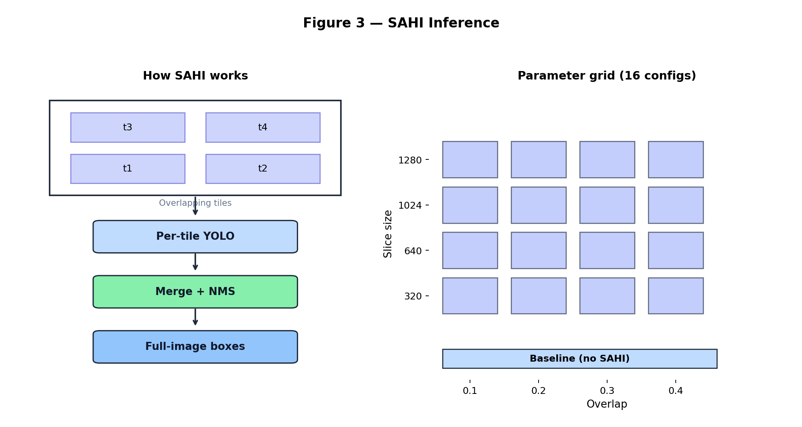
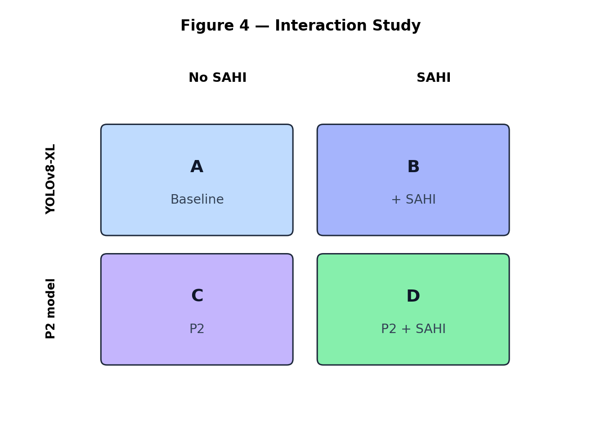
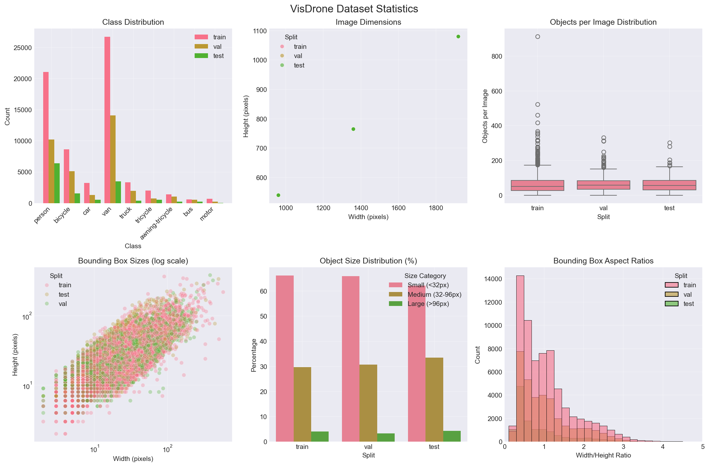
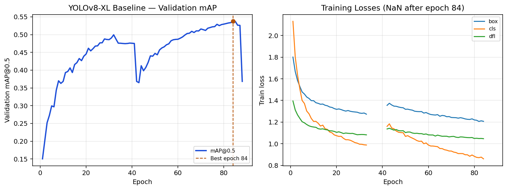

Abstract
Detecting small, densely packed objects in drone imagery remains difficult for standard single-stage detectors. This project builds a reproducible YOLOv8-XL pipeline on VisDrone-DET under an 8 GB Windows training recipe, then extends the same checkpoint into a structured research architecture: SAHI sliced inference, a P2 high-resolution detection head, a four-condition interaction study, and failure analysis. The Phase 1 baseline reaches 0.5375 mAP@0.5 (0.3472 mAP@0.5:0.95) at epoch 84. VisDrone images and model weights are not redistributed with the public code.
Architecture
Five-phase research pipeline from VisDrone baseline through SAHI, P2 head, interaction ablation, and failure analysis.

Baseline
Establish a strong VisDrone detector under an 8GB Windows recipe so later methods share one fixed checkpoint. Result: 0.5375 mAP@0.5 at epoch 84.
SAHI
Apply sliced inference so small objects are seen at higher effective resolution, and find slice/overlap settings that balance accuracy and speed.
P2 Head
Add a finer-scale detection head so the network keeps high-resolution features that standard P3–P5 heads miss on tiny instances.
Interaction
Compare baseline, SAHI-only, P2-only, and both together to see whether the two fixes help each other or overlap.
Analysis
Study failure cases and turn them into practical guidance on when to use SAHI, P2, or the combination.
System pipeline

Data and EDA feed the YOLOv8-XL baseline; SAHI and P2 branch from that checkpoint, then meet in the interaction study and analysis.
Detector: YOLOv8-XL vs P2 head

Baseline Detect operates on P3/P4/P5. The P2 variant adds a 1/4-scale head to retain fine spatial detail for VisDrone objects under 32×32 pixels.
SAHI sliced inference

Overlapping tiles are inferred independently and merged with NMS. The study enumerates 16 slice×overlap settings against a no-SAHI baseline for accuracy–speed trade-offs.
Interaction study (A/B/C/D)

Same VisDrone val set (548 images), focus on objects <32px, report mAP and FPS. Metrics: S = (D−C)−(B−A); R = 1 − (D−A)/((B−A)+(C−A)); IG = (D−A) − max(B−A, C−A).
Dataset
VisDrone-DET is dominated by small instances: exploratory analysis on a 1,000-image train subsample finds 66.2% of boxes smaller than 32×32 pixels and about 68 objects per image. Official DET training contains 6,471 images; the EDA table below is the subsample used for characterization.

| Split (EDA) | Images | Objects | Avg / image | Small (<32px) |
|---|---|---|---|---|
| Train subsample | 1,000 | 67,741 | 67.7 | 66.2% |
| Val | 548 | 35,251 | 64.3 | 65.9% |
| Test (local tooling) | 209 | 13,446 | 64.3 | 62.1% |
Baseline Results

| Metric | Value |
|---|---|
| Best epoch | 84 |
| mAP@0.5 | 0.53746 |
| mAP@0.5:0.95 | 0.34715 |
| Precision / Recall | 0.613 / 0.531 |
| Recipe | imgsz 1280, batch 1, workers 0, AdamW, AMP |
Full per-epoch log: yolov8x_baseline_results.csv.
BibTeX
@software{ahmed2026small_object_drone,
title = {Small-Object Detection on Drone Imagery: VisDrone YOLOv8-XL Baseline and SAHI/P2 Protocol},
author = {Ahmed, Rafi},
year = {2026},
url = {https://github.com/codewith-rafi/small-object-detection-drone}
}
@article{zhu2021detection,
title = {Detection and Tracking Meet Drones Challenge},
author = {Zhu, Pengfei and Wen, Longyin and Du, Dawei and Bian, Xiao and Fan, Heng and Hu, Qinghua and Ling, Haibin},
journal = {IEEE Transactions on Pattern Analysis and Machine Intelligence},
volume = {44},
number = {11},
pages = {7380--7399},
year = {2022}
}
@inproceedings{akyon2022sahi,
title = {Slicing Aided Hyper Inference and Fine-tuning for Small Object Detection},
author = {Akyon, Fatih Cagatay and Altinuc, Sinan Onur and Temizel, Alptekin},
booktitle = {2022 IEEE International Conference on Image Processing (ICIP)},
pages = {966--970},
year = {2022},
doi = {10.1109/ICIP46576.2022.9897990}
}Contact
Rafi Ahmed
codewithrafi@outlook.com ·
GitHub ·
www.codewithrafi.com